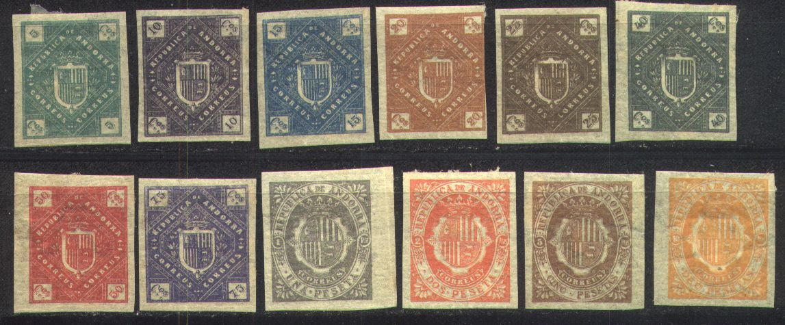
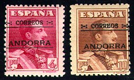

(Reduced size)
Note: on my website many of the
pictures can not be seen! They are of course present in the
catalogue;
contact me if you want to purchase it.

12 non issued values with inscription 'REPUBLICA ANDORRA' exist (1875, other sources say 1896?) in two types; 5 to 75 cmos (8 values) in a diamond shaped design and 1 pes to 10 pes (4 values) in an elliptic design. I've also seen them perforated. They were printed to the order of a dealer in Madrid, who sold them as genuine stamps. Also misprints exist, for example 'DUE PESETA' black printed together with a 1 P black stamp, or 15 cts printed together with 75 cts. I've also seen them with overprint 'SELLO DE SERVICO'. These 'essays' were made under the influence of the stamp forger Placido Ramon de Torres.
In the book from Bourdi: 'Les Timbres poste de
fantaisie' a Leipzig emission is mentioned which was supposed to
have been made in 1883. A man with beard (Louis Senf) with a hat
is pictured on this stamp 10 c red. The inscription is 'Republica
de Andorra Diez centimos' with 'Mostaza H.S.' at the bottom
(which translates as Senf=mustard in Spanish). I have never seen
this stamp, if anybody has an image of such a stamp, please
contact me! (information obtained from Gerhard Lang). Futher
investigation learns us that actually Moens made this stamp,
since he was angry with the fact that Senf copied his articles
without citing him. Thus Moens created a fictitious stamp of
Andorra, and got some friends to send it to Senf. Senf then took
the bait and published this stamp. Moens then rediculized him in
his journal. The Bourdi book says:
'1883. - Emission de Leipzig. Homme barbu (sans doute Louis
Senf) de profil gauche, surmonté d'un bonnet phrygien.
Inscription autour :"Republica de Andorra / Diez
Centimos" et au bas "Mostaza H.S."Valeur au 4
coins. Dent. 10 centimos rouge-foncé"

2 c green 5 c lilac 10 c green 15 c blue 20 c violet 25 c red 30 c brown 40 c blue 50 c orange 1 P blue 4 P red 10 P brown Express stamp, inscription 'CORRESPONDENCIA URGENTE'
(Reduced size)
20 c red
Unissued airmail stamps (1934):
These stamps were prepared to serve for an airmail service from Andorra to Barcelona (Spain). However, the service was never put into use. Two other designs exists and the overprint 'FRANQUICIA DEL CONSELL'
Loads of information can be found at: http://www.chy-an-piran.demon.co.uk/